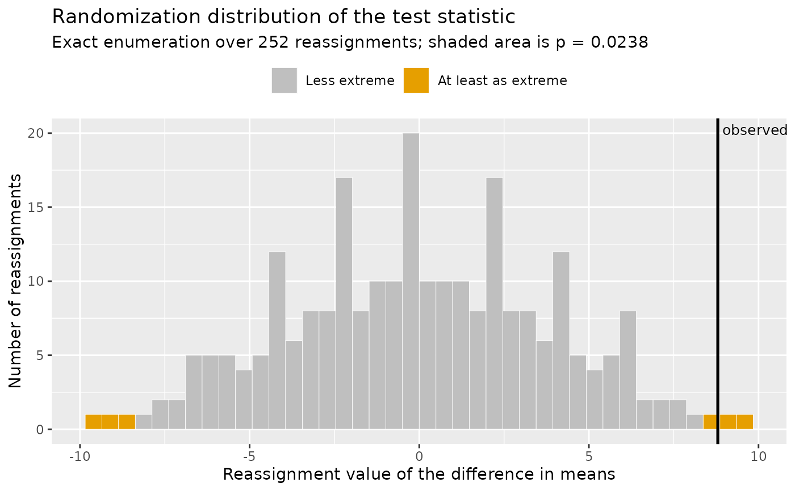

Plot the Randomization Distribution Behind a Randomization Test
Source:R/plot_randomization_test.R
plot_randomization_test.RdDisplays the reference distribution that randomization_test
built by reassigning the observed scores to the two groups, with the
observed statistic marked and every reassignment at least as extreme as
the observed one shaded. The shaded proportion is the p-value, so
the figure shows where that number came from instead of only reporting
it.
Arguments
- object
A result of
randomization_test.- bins
Number of histogram bins used to display the reference distribution. Defaults to
40.- palette
Character; the color palette. Defaults to
"okabe_ito", base R's colorblind-safe Okabe-Ito palette;"tableau"is also available.- ...
Currently unused; present so the signature can grow without breaking existing calls.
Details
Reading the figure is the point of it. The spread of the distribution is what the reassignments alone can produce when the grouping is irrelevant, which is the null hypothesis of the test. If the observed statistic sits inside that spread, reassignment alone explains it. If it sits out in a tail, few reassignments reproduce it, and that scarcity is the evidence. No normal or t distribution appears anywhere in the construction. This is the display Chapter 1 of Maxwell, Delaney, and Kelley (2027) uses to introduce the logic of the randomization test.
References
Fisher, R. A. (1935). The design of experiments. Oliver & Boyd.
Maxwell, S. E., Delaney, H. D., & Kelley, K. (2027). Designing experiments and analyzing data: A model comparison perspective (4th ed.). Routledge. (See Chapter 1 on the logic of the randomization test.)
See also
randomization_test for the test itself.
Other plotting:
plot_R2(),
plot_cfa_k(),
plot_ci(),
plot_equivalence(),
plot_forest(),
plot_irt_information(),
plot_mediation_mbco(),
plot_regions_of_significance(),
plot_smd(),
plot_trajectories(),
plot_trajectories_fitted(),
power_equivalence_md_plot()
Examples
treatment <- c(80, 84, 79, 88, 83)
control <- c(72, 75, 68, 81, 74)
rt <- randomization_test(group_1 = treatment, group_2 = control)
plot_randomization_test(rt)
